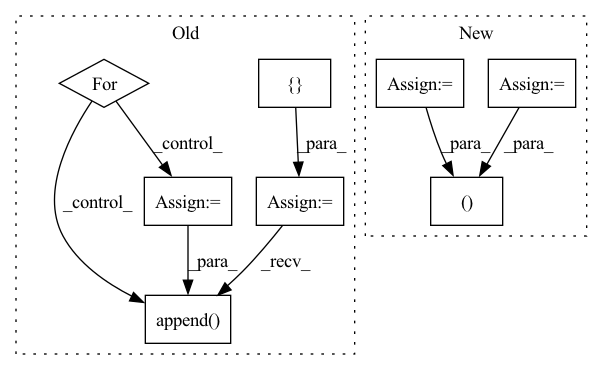

Pattern ID :696
Before Change
)
def forward(self, input, hidden_state=None):
output = []
for step in range(input.size(1)):
// Compute current time-step
hidden_state = self.rnn_cell(input[:, step, :, :, :], hidden_state)
output.append( hidden_state)
// Stack the list of output hidden states into a tensor
output = torch.stack(output, 0)
return output
After Change
cur_layer_input = hid_dp(cur_layer_input)
last_state_list.append(h)
layer_output = torch.stack(output_inner, dim=int(self.batch_first))
last_state_list = torch.stack(last_state_list, dim=0)
return layer_output, last_state_list
def reset_parameters(self):
for c in self.cell_list:
c.reset_parameters()In pattern: SUPERPATTERN
Frequency: 3
Non-data size: 8
Instances Fragment ID: 2355042
Project Name: openclimatefix/skillful_nowcasting
Commit Name: 02c5ceadd01484d6ac8bce848ff76446fe7a6917
Time: 2021-10-18
Author: jacob@bieker.tech
File Name: nowcasting_gan/layers/ConvGRU.py
M Class Name: ConvGRU
N Class Name: ConvGRU
M Method Name: forward(3)
N Method Name: forward(3)
M Parent Class: nn.Module
N Parent Class: nn.Module
M File Name: nowcasting_gan/layers/ConvGRU.py
N File Name: nowcasting_gan/layers/ConvGRU.py
M Start Line: 269
M End Line: 276
N Start Line: 196
N End Line: 221
Before Change
B, N, C = x.shape
if self.context > 1:
z = [ xfor d in range(1, self.context // 2 + 1):
z_u = torch.zeros_like(x)
z_u[:, d:, :] = x[:, :-d, :] // i-d
z.append( z_u)
z_d = torch.zeros_like(x)
z_d[:, :-d, :] = x[:, d:, :] // i+d
z.append(z_d)
x = torch.cat(z, dim=2) // (B, N, C*width)After Change
def forward(self, x, x_base=None):
B, N, C = x.shape
x = self.contextize(x, self.context) // (B, N, C*context)
if self.mix_base > 0 and x_base is not None:
x_base = self.contextize(x_base, self.mix_base) // (B, N, 4*mix_base)
x = torch.cat((x_base, x ), dim=2)
x = x.view(B*N, -1) // (B*N, C*width)
for fc in self.fc[:-1]: Fragment ID: 2355073
Project Name: mxfold/mxfold2
Commit Name: 998dd44f054b5851de1d3b751eb20091d5bf5628
Time: 2019-11-11
Author: satoken@bio.keio.ac.jp
File Name: dnnfold/fold/layers.py
M Class Name: FCUnpairedLayer
N Class Name: FCUnpairedLayer
M Method Name: forward(3)
N Method Name: forward(2)
M Parent Class: nn.Module
N Parent Class: nn.Module
M File Name: dnnfold/fold/layers.py
N File Name: dnnfold/fold/layers.py
M Start Line: 212
M End Line: 223
N Start Line: 255
N End Line: 263
Before Change
)
def forward(self, input, hidden_state=None):
output = []
for step in range(input.size(1)):
// Compute current time-step
hidden_state = self.rnn_cell(input[:, step, :, :, :], hidden_state)
output.append( hidden_state)
// Stack the list of output hidden states into a tensor
output = torch.stack(output, 0)
return output
After Change
cur_layer_input = hid_dp(cur_layer_input)
last_state_list.append(h)
layer_output = torch.stack(output_inner, dim=int(self.batch_first))
last_state_list = torch.stack(last_state_list, dim=0)
return layer_output, last_state_list
def reset_parameters(self):
for c in self.cell_list:
c.reset_parameters() Fragment ID: 2355076
Project Name: openclimatefix/skillful_nowcasting
Commit Name: 02c5ceadd01484d6ac8bce848ff76446fe7a6917
Time: 2021-10-18
Author: jacob@bieker.tech
File Name: nowcasting_gan/layers/ConvGRU.py
M Class Name: ConvGRU
N Class Name: ConvGRU
M Method Name: forward(3)
N Method Name: forward(3)
M Parent Class: nn.Module
N Parent Class: nn.Module
M File Name: nowcasting_gan/layers/ConvGRU.py
N File Name: nowcasting_gan/layers/ConvGRU.py
M Start Line: 269
M End Line: 276
N Start Line: 196
N End Line: 221